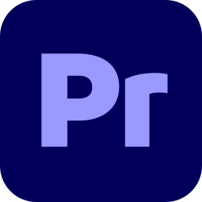

Programy do edycji
Do montażu wideo można używać zarówno profesjonalnych programów, jak i prostych aplikacji mobilnych:

Adobe After Effects
Profesjonalne animacje i efekty specjalne, idealne do efektownych editów.

Adobe Premiere Pro
Pełny program do montażu wideo z możliwością precyzyjnego cięcia i miksowania dźwięku.

Alight Motion
Mobilna aplikacja do montażu i animacji, świetna do szybkich i efektownych editów na telefonie.